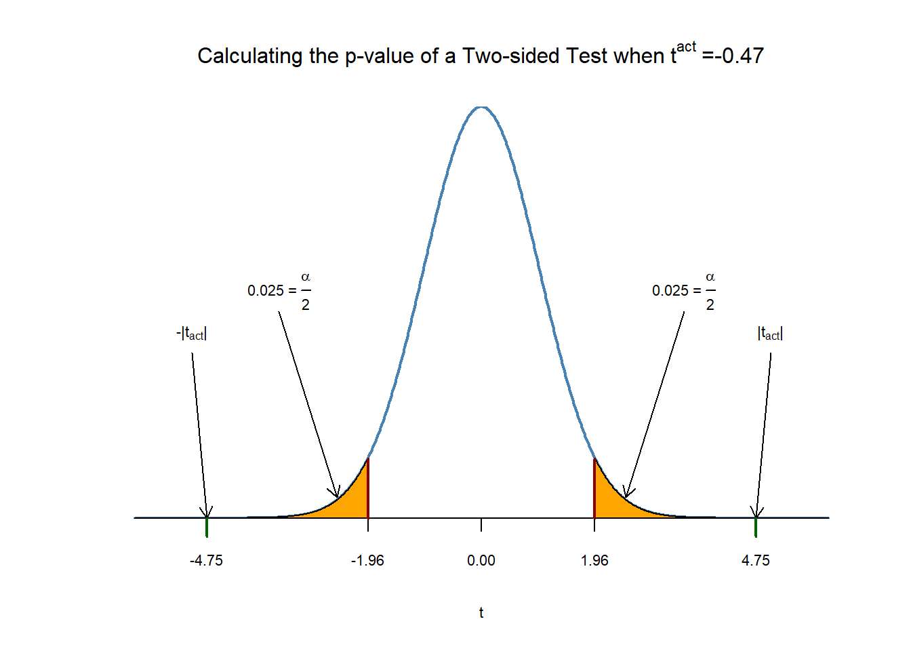
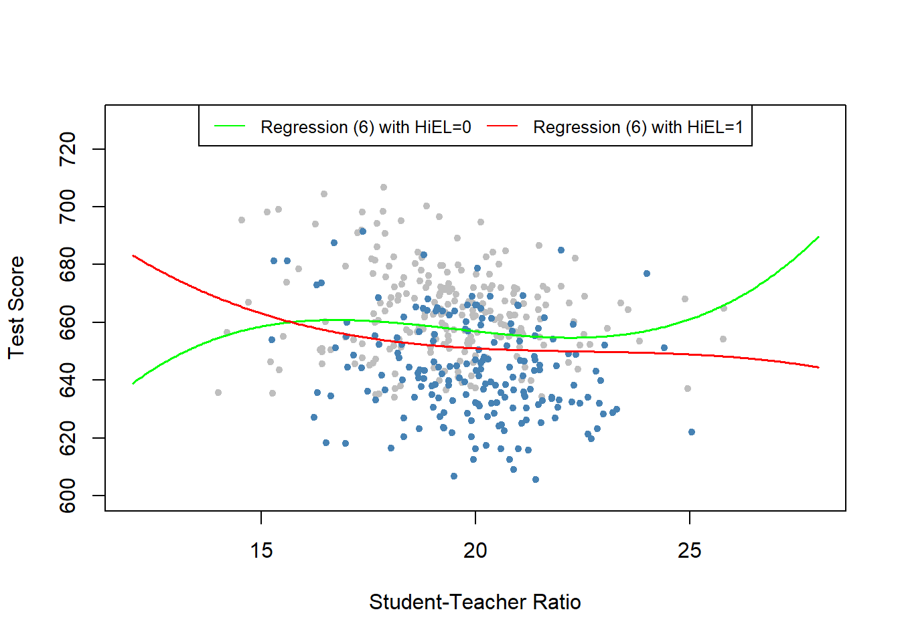
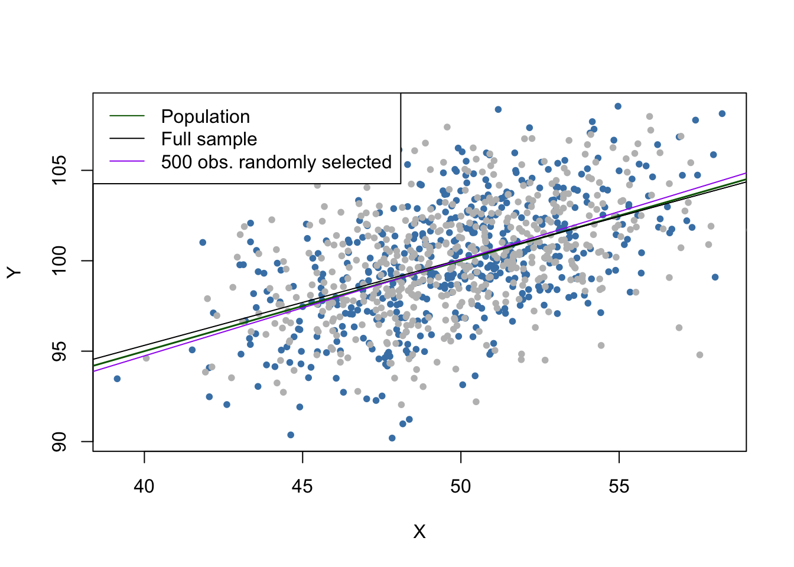
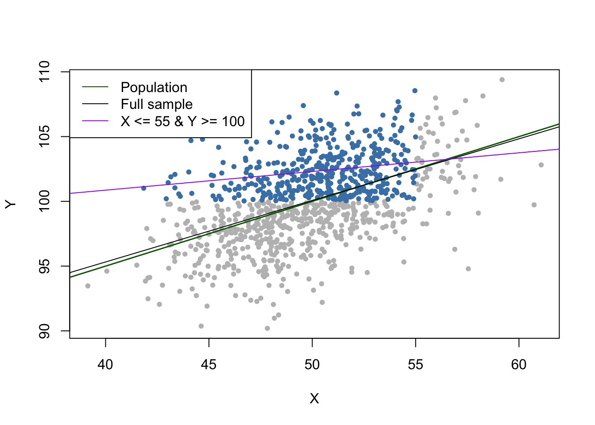

9.2 Threats to Internal Validity of Multiple Regression Analysis
This section lists five sources that cause the OLS estimator in (multiple) regression models to be biased and inconsistent for the causal effect of interest and discusses possible remedies. Note that all five sources arise from violation of the first least squares assumption in Key Concept 6.4.
This sections treats:
Omitted variable Bias
Misspecification of the functional form
Measurement errors
Missing data and sample selection
Simultaneous causality bias
Beside these threats for consistency of the coefficient estimation, we will also briefly discuss sources of inconsistent estimation of OLS standard errors.
Omitted Variable Bias
Key Concept 9.2
Omitted Variable Bias: Should I include More Variables in My Regression?
Inclusion of additional variables reduces the risk of omitted variable bias but may increase the variance of the estimator of the coefficient of interest.
We present some guidelines that help deciding whether to include an additional variable:
Specify the coefficient(s) of interest.
Identify the most important potential sources of omitted variable bias by using knowlegde available before estimating the model. You should end up with a base specification and a set of regressors that are questionable.
Use different model specifactions to test whether questionable regressors have coefficients different from zero.
Use tables to provide “full disclosure” of your results i.e. present different model specifications that do both support your argument and enable the reader to see the effect of including questionable regressors.
By now you should be aware of omitted variable bias and its consequences. Key Concept 9.2 gives some guidelines on how to proceed if there are control variables that possibly allow to reduce an omitted variable bias. If including additional variables to mitigate the bias is not an option because there are no adequate controls, there are different approaches to solve the problem:
Usage of Panel data (discussed in Chapter 10)
Usage of Instrumental variables regression (discussed in Chapter 12)
Usage of a randomized control experiment (discussed in Chapter 13)
Misspecification of the Functional Form of the Regression Function
If the population regression function is nonlinear but the regression model is linear, we say that the functional form of the regression function is misspecified. This leads to a bias of the OLS estimator.
Key Concept 9.3
Functional Form Misspecification
We say a regression suffers from misspecification of the functional form when the functional form of the estimated regression model differs from the functional form of the population regression function. Functional form misspecification leads to biased and inconsistent coefficient estimators. A way to detect functional form misspecification is to plot the estimated regression function and the data. This may also be helpful to choose the correct functional form.
It is easy to come up with an example case of misspecification of the functional form:
Consider the case where the population regression function is \[ Y_i = - X_i^2 \] but the estimated model is \[ Y_i = \beta_0 + \beta_1 X_i + u_i \] so that the regression function is misspecified.
# set random seed for reproducibility
set.seed(3)
# generate data set
X <- runif(100, -5, 5)
Y <- X^2 + rnorm(100)
# plot the data
plot(X, Y,
main = "Misspecification of Functional Form",
pch = 20,
col = "steelblue"
)
# estimate and plot the regression function
ms_mod <- lm(Y ~ X)
ms_mod##
## Call:
## lm(formula = Y ~ X)
##
## Coefficients:
## (Intercept) X
## 8.11363 -0.04684abline(ms_mod,
col = "darkred",
lwd = 2
)
It is evident that regression errors are relatively small for observations close to \(X=-3\) and \(X=3\) but increase for \(X\) values closer to zero and even more for regressor values beyond \(-4\) and \(4\). Consequences are drastic: the intercept is estimated to be \(8.1\) and for the slope parameter we obtain an estimate close to zero which is obviously wrong. This issue does not dissapear as the number of observations is inreased because OLS is biased and inconsistent due to the misspecification of the regression function.
Measurement Error and Errors-in-Variables Bias
Key Concept 9.4
Errors-in-Variable Bias
When independent variables are measure imprecisely, we speak of Errors-in-variables bias. This bias does not disappear if the sample size is large. If the measurement error has mean zero and is independent of the affected variable, the OLS estimator of the respective coefficient is biased towards zero.
where \(\overset{\sim}{X}_i\) and the error term \(v_i\) are correlated. Thus OLS would be biased and inconsitent for the true \(\beta_1\) in this example.
One can show that direction and strength of the bias depend on the correlation between the observed regressor, \(\overset{\sim}{X}_i\), and the measurement error, \((X_i - \overset{\sim}{X}_i)\). The correlation depends on the type of the measurement error.
The classical measurement error model assumes that the error, \(w_i\), has zero mean and that the error is uncorrelated with the variable, \(X_i\), and the error term of the poulation regression model, \(u_i\):
\[\begin{equation} \overset{\sim}{X}_i = X_i + w_i \ \ , \ \ corr(w_i,u_i)=0 \ \ , \ \ corr(w_i,X_i)=0 \end{equation}\] Then it holds that \[\begin{equation} \widehat{\beta}_1 \xrightarrow{p}{\frac{\sigma_{X}^2}{\sigma_{X}^2 + \sigma_{w}^2}} \tag{9.1} \end{equation}\]Which implies inconsistency as \(\sigma_{X}^2, \sigma_{w}^2 > 0\) such that the fraction in (9.1) is smaller than \(1\). Note that, there are two extreme cases: first, if there is no measurement error, \(\sigma_{w}^2=0\) such that \(\widehat{\beta}_1 \xrightarrow{p}{\beta_1}\). Second, if \(\sigma_{w}^2 \gg \sigma_{X}^2\) we have \(\widehat{\beta}_1 \xrightarrow{p}{0}\). This is the case if the measurement error is so large that there essentially is no information on \(X\).
The most obvious way to deal with errors-in-variables bias is to use an accurately measured \(X\). If this not possible, instrumental variables regression can be an option. One might also deal with the issue by using a mathematical model of the measurement error and correct the estimates. For example, if it is plausible that the classical measurement error model applies and if there is information that can be used to estimate the ratio in equation (9.1), one could compute an estimate that corrects for the downwoard bias.
For example, consider two bivariate normal distributed random variables \(X,Y\). It is a well known result, that the conditional expectation function of \(Y\) given \(X\) has the form \[\begin{align*} E(Y\vert X) = E(Y) + \rho_{X,Y} \frac{\sigma_{Y}}{\sigma_{X}}\left[X-E(X)\right]. \tag{9.2} \end{align*}\] Thus for \[\begin{align*} (X, Y) \sim \mathcal{N}\left[\begin{pmatrix}50\\ 100\end{pmatrix},\begin{pmatrix}10 & 5 \\ 5 & 10 \end{pmatrix}\right] \tag{9.3} \end{align*}\] according to (9.2), the population regression function is \[\begin{align*} Y_i =& \, 100 + 0.5 (X - 50) \\ =& \, 75 + 0.5 X. \end{align*}\]Suppose you gather data on \(X\) and \(Y\) but that can you only measure \(\overset{\sim}{X_i} = X_i + w_i\) with \(w_i \overset{i.i.d.}{\sim} \mathcal{N}(0,\sqrt{10})\). Since the \(w_i\) are purely random, there is no correlation between the \(X_i\) and the \(w_i\) so that we have a case of the classical measurement error model. We can illustrate this using R.
# random seed
set.seed(1)
# load the mvtnorm package and simulate data
library(mvtnorm)
dat <- data.frame(
rmvnorm(1000, c(50,100),
sigma = cbind(c(10,5), c(5,10))
)
)
# set columns names
colnames(dat) <- c("X","Y")We now estimate a simple linear regression of \(Y\) on \(X\) using this sample data and run the same regression again but this time add i.i.d. \(\mathcal{N}(0,\sqrt{10})\) errors to \(X\).
# estimate the model (without measurement error)
nme_mod <- lm(Y ~ X, data = dat)
# estimate the model (measurement error in X)
dat$X <- dat$X + rnorm(n = 1000, sd = sqrt(10))
me_mod <- lm(Y ~ X, data = dat)
# print estimated coefficients to console
nme_mod$coefficients## (Intercept) X
## 76.3002047 0.4755264me_mod$coefficients## (Intercept) X
## 87.276004 0.255212We visualize the estimation results and compare with the population regression function.
# plot sample data
plot(dat$X, dat$Y,
pch=20,
col="steelblue",
xlab = "X",
ylab = "Y"
)
# add population regression function
abline(coef = c(75,0.5),
col = "darkgreen",
lwd = 1.5
)
# add estimated regression functions
abline(nme_mod,
col = "purple",
lwd = 1.5
)
abline(me_mod,
col = "darkred",
lwd = 1.5
)
# add legend
legend("topleft",
lty = 1,
col = c("darkgreen", "purple", "darkred"),
legend = c("Population", "No Errors", "Errors")
)
Notice that in the situation without measurement error, the estimated regression function is close to the population regression function. Things are different when we use the error afflicted data on \(X\): both the estimate for the intercept and the estimate for the coefficient on \(X\) differ considerably from results obtained using the “clean” data on \(X\). In particular \(\widehat{\beta}_1 = 0.255\). This is evidence for the downward bias. We are in the comfortable situation to know \(\sigma_X^2\) and \(\sigma^2_w\). This allows us to correct for bias using (9.1). Using this information we obtain a biased-corrected estimate \[\frac{\sigma_X^2 + \sigma_w^2}{\sigma_X^2} \widehat{\beta}_1 = \frac{10+10}{10} 0.255 = 0.51\] which is fairly close to the true coefficient in the population regression function, \(\beta_1=0.5\).
Missing Data and Sample Selection
Key Concept 9.5
Sample Selection Bias
When the sampling process influences the availability of data and when there is a relation of this sampling process to the dependend variable that goes beyond the dependence on the regressors, we say that there is a sample selection bias. This bias is due to correlation between one ore more regressors and the error term. This implies both bias and inconsistency of the OLS estimator.
There are three cases of Sample selection but only one of which poses a threat to internal validity of a regression study. The three cases are:
Data are missing at random.
Data are missing based on the value of a regressor.
Data are missing due to a selection process that is releated to the dependent variable.
Let us jump back to the example of variables \(X\) and \(Y\) distributed as stated in equation (9.3) and illustrate all three cases using R.
If data are missing at random, this is nothing but loosing observations. For example, loosing \(50\%\) of sample would be the same as never having seen the (randomly chosen) half of the sample observed. This does not introduce an estimation bias.
# random seed
set.seed(1)
# simulate data
dat <- data.frame(
rmvnorm(1000, c(50,100),
sigma = cbind(c(10,5), c(5,10))
)
)
colnames(dat) <- c("X","Y")
# mark 500 randomly selected observations
id <- sample(1:1000, size = 500)
plot(dat$X[-id],
dat$Y[-id],
col = "steelblue",
pch = 20,
xlab = "X",
ylab = "Y")
points(dat$X[id],
dat$Y[id],
col = "gray",
pch = 20)
# add population regression function
abline(coef = c(75,0.5),
col = "darkgreen",
lwd = 1.5
)
# add estimated regression function for full sample
abline(nme_mod)
# estimate model case 1, add regression line
dat <- dat[-id,]
c1_mod <- lm(dat$Y ~ dat$X, data = dat)
abline(c1_mod, col = "purple")
# add legend
legend("topleft",
lty = 1,
col = c("darkgreen", "black", "purple"),
legend = c("Population", "Full sample", "500 obs. randomly selected")
) The gray dots are the \(500\) discarded observations. The estimation results when using the remaining observations deviate only marginally from the results obtained using the full sample.
The gray dots are the \(500\) discarded observations. The estimation results when using the remaining observations deviate only marginally from the results obtained using the full sample.
Selecting data randomly based on the value of a regressor has also the effect of reducing the sample size and does not introduce estimation bias. We will now drop observations with \(X > 45\), reestimate the model and compare.
# random seed
set.seed(1)
# simulate data
dat <- data.frame(
rmvnorm(1000, c(50,100),
sigma = cbind(c(10,5), c(5,10))
)
)
colnames(dat) <- c("X","Y")
# mark observations
id <- dat$X >= 45
plot(dat$X[-id],
dat$Y[-id],
col = "steelblue",
pch = 20,
xlab = "X",
ylab = "Y")
points(dat$X[id],
dat$Y[id],
col = "gray",
pch = 20)
# add population regression function
abline(coef = c(75,0.5),
col = "darkgreen",
lwd = 1.5
)
# add estimated regression function for full sample
abline(nme_mod)
# estimate model case 1, add regression line
dat <- dat[-id,]
c2_mod <- lm(dat$Y ~ dat$X, data = dat)
abline(c2_mod, col = "purple")
# add legend
legend("topleft",
lty = 1,
col = c("darkgreen", "black", "purple"),
legend = c("Population", "Full sample", "Obs. with X <= 45")
)
Note that although we dropped more than \(90\%\) of all observations, the estimated regression function is very close to the line estimated based on the full sample.
In the third case we face sample selection bias. We can illustrate this by using the selection procedure dat[which(dat$X <= 55 & dat$Y >= 100)]
# random seed
set.seed(1)
# simulate data
dat <- data.frame(
rmvnorm(1000, c(50,100),
sigma = cbind(c(10,5), c(5,10))
)
)
colnames(dat) <- c("X","Y")
# mark observations
id <- which(dat$X <= 55 & dat$Y >= 100)
plot(dat$X[-id],
dat$Y[-id],
col = "gray",
pch = 20,
xlab = "X",
ylab = "Y")
points(dat$X[id],
dat$Y[id],
col = "steelblue",
pch = 20
)
# add population regression function
abline(coef = c(75,0.5),
col = "darkgreen",
lwd = 1.5
)
# add estimated regression function for full sample
abline(nme_mod)
# estimate model case 1, add regression line
dat <- dat[id,]
c3_mod <- lm(dat$Y ~ dat$X, data = dat)
abline(c3_mod, col = "purple")
# add legend
legend("topleft",
lty = 1,
col = c("darkgreen", "black", "purple"),
legend = c("Population", "Full sample", "X <= 55 & Y >= 100")
)
We see that the selection process leads to biased estimation results. There are methods that allow to correct for sample selection bias. However, these methods are beyond the scope of the book and therefore not considered here. The concept of sample selection bias is summarized in Key Concept 9.5.
Simultaneous Causality
Key Concept 9.6
Simultaneous Causality Bias
So far we have assumed that the changes in the independent variable \(X\) are responsible for changes in the dependent variable \(Y\). When the reverse is also true, say that there is simultaneous causality between \(X\) and \(Y\). This reverse causality leads to correlaltion between \(X\) and the error in the population regression of interest such that the coefficient on \(X\) is estimated with a bias.
Suppose we are interested in estimating the effect of a \(20\%\) increase of cigarettes prices on ciggarettes consumption in the United States using a multiple regression model. This may be investigated using the dataset CigarettesSW which is part of the AER package. CigarettesSW is a panel data set on cigarette consumption for all 48 continental US States from 1985-1995 and provides data on economic indicators and average local prices, taxes and per capita pack consumption.
After loading the dataset, we pick observations for the year 1995 and plot logarithmns of average federal and local excise taxes, tax, against pack consumtion, packs, and estimate a simple linear regression model.
# load data
library(AER)
data("CigarettesSW")
c1995 <- subset(CigarettesSW, year == "1995")
# estimate model
cigcon_mod <- lm(log(packs) ~ log(price), data = c1995)
cigcon_mod##
## Call:
## lm(formula = log(packs) ~ log(price), data = c1995)
##
## Coefficients:
## (Intercept) log(price)
## 10.850 -1.213# plot estimated regression line and data
plot(log(c1995$price), log(c1995$packs),
xlab = "ln(Price)",
ylab = "ln(Consumption)",
main = "Demand for Cigarettes",
pch = 20,
col = "steelblue"
)
abline(cigcon_mod,
col="darkred",
lwd=1.5)
Remember from chapter 8 that, due to the log-log specification, in the population regression the coefficient on the logarithm of price is interpreted as the price elasticity of consumption. The estimated coefficient suggest that a \(1\%\) increase in cigarettes prices reduces cigarette consumption by about \(1.2\%\), on average. Have we estimated a demand curve? The answer is no: this is a classic example of simultaneous causality (see Key Concept 9.6) since the observations are market equilibria which are determined by both changes in supply and changes in demand such that the price is correlated with the error term and the OLS estimator is biased. We can neither estimate a demand nor a supply curve consistently using this approach.
We will return to this issue (and the dataset) in chapter 12 which presents instrumental variables regression, an approach that allows consistent estimation when there is simultaneous causality.
9.2.0.1 Sources of Inconsistency of OLS Standard Errors
There are two central threats to computation of consistent OLS standard errors:
Heteroskedasticity: implications of heteroskedasticiy have been discussed in chapter 5. Heteroskedasticity robust standard errors as computed by the function
vcovHC()from the packagesandwichproduce valid standard errors unter heteroskedasticity.Serial correlation: if the population regression error is correlated across observations, we speak of serial correlation. This happens often in applications were repeated observations are used like in panel data studies. As for heteroskedasticity, the
vcovHC()package can be used to obtain valid standard errors when there is serial correlation.
Inconsistently computed standard errors will produce invalid hypothesis tests and wrong confidence intervals. E.g. when testing the null hypothesis that some model coefficient is zero, we cannot trust the outcome anymore because the test may fail to have the significance level of \(5\%\) due to a wrongly computed standard error.
Key Concept 9.7 summarizes all discussed threats to internal validity.
Key Concept 9.7
Threats to Internal Validity of a Regression Study
The five primary threats to internal validity of a multiple regression study are:
Omitted variables
Misspecefication of functional form
Errors in variables (due to measurement error in regressors)
Sample selection
Simultaneous causality
All these threats lead to failure of the first least squares assumption \[E(u_i\vert X_{1i},\dots ,X_{ki}) \neq 0\] so that the OLS estimator is biased and inconsistent.
Furthermore, if one does not adjust for heteroskedasticity and/or serial correlation, if present, incorrect standard errors may be a threat to internal validity of the study.